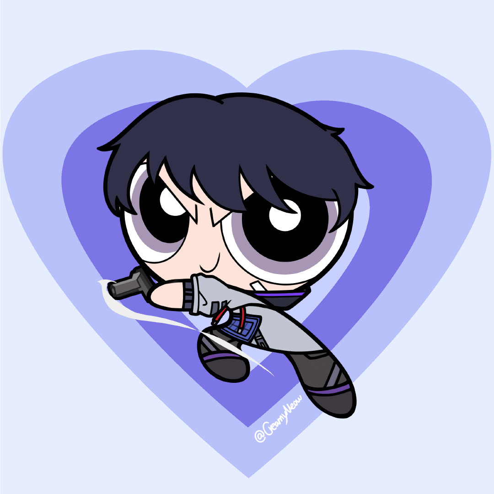

Kazuhiro Gerarudei Yamazaki

Summary
I am an undergraduate student at Universitas Gunadarma, studying in the Faculty of Informatics. I have a strong passion for web development, front-end development, and web design
Education:
- Undergraduate Computer Science Degree at Gunadarma University (2022 - present)
- AL - Hasra Senior High School Science Class (2018-2021)
Work Exprience:
Team Leader at Uniqlo
2021 - 2022
- Upsell company targeted product
- Push sell company core product
- Engage costumer
Barista at Fore Coffee Indonesia
2023 - 2024
- Selling Coffee
- Drama (Optional)
Hard & Soft Skill:
- Microsoft Office ★ ★ ★ ★
- Python ★ ★ ★
- HTML, CSS, Javascript ★ ★ ★ ★
- English ★ ★ ★ ★
- Japanase ★ ★ ★
Certificate and Award:
- Udemy Web Deveopment (Soon)
Contact Me !
About Me